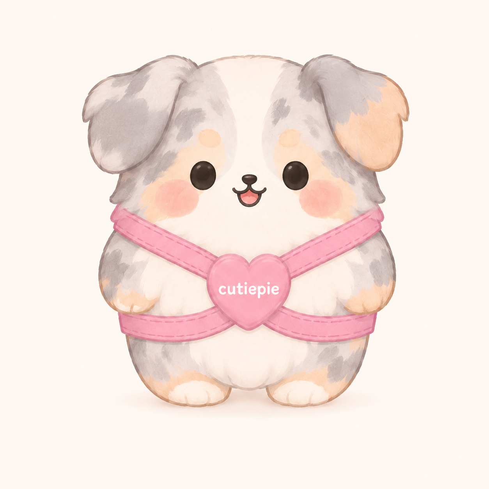

What Cutiepie Adds
It gives agents a repeatable operating system for coding sessions: required docs, explicit skill routing, lifecycle hooks, durable memory, and gates that prove feature and component behavior.

Cutiepie helps an agent write code by keeping the development loop explicit: load durable context, choose the right skill, create or update project artifacts, implement through gates, persist state, and hand off cleanly to the next session.
Cutiepie combines a few recurring ideas from agent-harness writing: make boundaries legible, make fresh starts cheap, keep memory durable, run an improvement loop, and use adversarial review when the plan needs another lens. Click article nodes to open the source. Click feature nodes to jump to the related Cutiepie mechanism.
Click a node to jump to the section that explains that part of the session. The same flow works across Claude Code and Codex, with host-specific hook adapters and shared skills.
It gives agents a repeatable operating system for coding sessions: required docs, explicit skill routing, lifecycle hooks, durable memory, and gates that prove feature and component behavior.
Agents lose less context, plan against stable artifacts, coordinate subagents through clear boundaries, and leave the next session with a usable preamble instead of a vague transcript.
Shared workflow rules live in skills/. Claude Code and Codex use host-specific plugin metadata and hooks to trigger the same core development loop.
Cutiepie targets Claude Code and Codex without splitting the development method into separate products.
.claude-plugin/plugin.json.hooks/hooks.json for SessionStart, PreCompact, and SessionEnd.commands/ as thin entry points into skills..codex-plugin/plugin.json.skills/..codex/hooks.json when hooks = true.Hooks are lifecycle scripts. They do not replace agent judgment. They persist and inject structured state so the agent begins with the right context and leaves usable state behind.
| Hook | When it runs | What it does |
|---|---|---|
hooks/session-start |
New, resumed, cleared, or compacted session. | Injects using-cutiepie, recent git state, memory, failures, session notes, and active planning docs. |
hooks/pre-compact |
Before Claude Code compacts context. | Records a compaction marker, hook payload, branch, git status, and then refreshes state. |
hooks/session-end |
At Claude Code session end. | Records a session-end marker and refreshes audit and preamble files. |
hooks/codex-stop |
At Codex turn stop. | Records Codex stop payload and refreshes state while returning Codex-compatible hook JSON. |
hooks/update-state |
Manual /update-state or hook-side refresh. |
Writes STATE_AUDIT.md and PREAMBLE.md under ~/.cutiepie/memory/<project-slug>/. |
Skills are the behavioral layer. They tell the agent how to plan, implement, verify, review, and update state.
| Session phase | Skills | Purpose |
|---|---|---|
| Bootstrap | using-cutiepie, preamble |
Select relevant skills before acting and reconstruct context after clear or compact. |
| Discovery and planning | scaffolding-repo, brainstorming, writing-plans |
Create required artifacts, probe requirements, map features to components, and define gates. |
| Implementation | subagent-driven-development, executing-plans, test-driven-development |
Turn the plan into small implementation slices with internal TDD and clear subagent boundaries. |
| Verification and review | component-functional-testing, requesting-code-review, devils-advocate, summon-council |
Prove component contracts, feature behavior, and plan quality before claiming completion. |
| Debugging and handoff | systematic-debugging, capturing-failure-modes, update-state, finishing-a-development-branch |
Root-cause failures, preserve lessons, refresh state, update progress, and leave a clean branch. |
Tools are how the agent changes reality. Cutiepie does not hide tool use; it gives the agent rules for when tools should be used and what evidence must come back.
Cutiepie keeps project state in committed docs and user-specific memory. The docs are the source of truth for the project; memory captures session continuity and durable lessons.
.cutiepie/docs/PRD.md for problem statement and user storiesfeature_list.json for feature specs, references, phases, and pass/fail stateARD.md for decisions, assumptions, and caveatsARCHI.md for draw.io dataflow and component interfacesCONFIG.md for environment variables and tunablesPLAN.md for workflow checklist and phase progress~/.cutiepie/memory/<project-slug>/MEMORY.md~/.cutiepie/memory/<project-slug>/FAILURES.md~/.cutiepie/memory/<project-slug>/STATE_AUDIT.md~/.cutiepie/memory/<project-slug>/PREAMBLE.md~/.cutiepie/memory/<project-slug>/SESSIONS/Cutiepie separates feature acceptance from component contracts. This lets users track product progress while subagents get precise implementation boundaries.
A good session ends with a clean runway for the next one. The agent should update progress, commit coherent work, refresh state, and write enough memory for a fresh session to continue without archaeology.
feature_list.json, PLAN.md, CONFIG.md, or ARD.md when implementation changed feature state, workflow state, config, or decisions./update-state before clearing, compacting, or handing work to another agent.